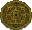
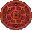
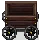
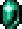
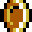
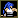
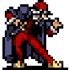
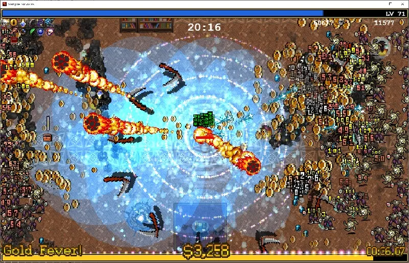

Vampire Survivors/아이템


목차
1. 개요2. 조합법3. 무기
3.1. 일반 무기3.2. 진화 무기3.3. 복제 무기
4. 장신구5. 특수6. 오브젝트 아이템7. 드롭 아이템8. 유물3.3.1. 백조자리, 불사조3.3.2. 적색 근육, 두번의 시간3.3.3. 무리 파괴자3.3.4. 말 카트리지3.3.5. 레벨링3.3.6. 실버 슬리버3.3.7. 파티 똥자루3.3.8. 실버 메롱3.3.9. 프리즘 댐즐3.3.10. 스펙쿨로 글로버스3.3.11. 스페쿨로 레이징 파이어3.3.12. 스페쿨로 아이스 팡3.3.13. 스페쿨로 록 라이엇3.3.14. 스펙투로 게일 포스3.3.15. 스펙쿨로 풀구르3.3.16. 스페쿨로 케레멧 버블3.3.17. 스펙쿨로 리펙시오3.3.18. 스펙쿨로 헥스3.3.19. 스페큘로 아누라
3.4. 히든 무기8.1. 그림 그리모어8.2. 괴물 도감8.3. 은하수 지도8.4. 매직 뱅어8.5. 마녀의 눈물8.6. 유리 가면8.7. 황금알8.8. 코주부 안경8.9. 노란색 신호8.10. 모르베인의 금지된 두루마리8.11. 위대한 복음8.12. 그라시아의 거울8.13. 일곱 번째 나팔8.14. 란도마조8.15. 아틀라스 게이트8.16. 카오스 말라카이트8.17. 카오스 로잘리아8.18. 카오스 라줄리아8.19. 카오스 알테만나8.20. 트라이섹션8.21. 용감한 이야기8.22. 가장무도회8.23. 아포플렉시8.24. 해독제8.25. 왁스 페티쉬8.26. 가운데에 시계가 박힌 로스트 치킨8.27. 녹색 눈의 가면.8.28. 아스트랄 계단 지도8.29. 다르카소8.30. 서바로키8.31. 애니마흐.8.32. 문스펠산 지도8.33. Foscari 호수 지도8.34. Polus 레플리카 지도8.35. 갈루가 정글 지도8.36. 캐슬바니아 지도8.37. 종마 게이트8.38. 스콜피온 게이트8.39. 카프라 게이트8.40. 킹스 게이트8.41. 거대 뱀 게이트8.42. 비스트 게이트8.43. 블랙 디스크8.44. 나무 조각 교본8.45. 켜켜히 쌓인 비밀8.46. 흑단석과 진홍석8.47. 디렉터의 조각8.48. 에메랄드 디스크8.49. 조커 디스크
9. 판매 아이템10. 기타1. 개요
게임 Vampire Survivors에 등장하는 아이템.
2. 조합법
 무기 진화 및 조합 둘러보기 | |||||||||||||||||||||||||||||||||||||||||||||||||||||||||||||||||||||||||||||||||||||||||||||||||||||||||||||||||||||||||||||||||||||||||||||||||||||||||||||||||||||||||||||||||||||||||||||||||||||||||||||||||||||||||||||||||||||||||||||||||||||||||||||||||||||||||||||||||||||||||||||||||||||||||||||||||
[ 펼치기 · 접기 ]
| |||||||||||||||||||||||||||||||||||||||||||||||||||||||||||||||||||||||||||||||||||||||||||||||||||||||||||||||||||||||||||||||||||||||||||||||||||||||||||||||||||||||||||||||||||||||||||||||||||||||||||||||||||||||||||||||||||||||||||||||||||||||||||||||||||||||||||||||||||||||||||||||||||||||||||||||||

- 아이템은 레벨 업 시 무작위로 제시되는 선택 목록에서 고를 수 있다. 크게 무기와 장신구로 분류되며, 각각 6개씩 도합 12개의 아이템을 구비할 수 있다. 사용하고자 할 무기와 그에 맞는 장신구를 미리 생각해 둔 다음 전략적으로 선택해야 한다. 장신구의 경우 6개를 모두 얻은 뒤에도 맵에 떨어진 스테이지 아이템을 획득하면 7종 이상의 장신구를 지니는 것도 가능하다. 무기의 경우 랜덤으로 등장하는 사탕 상자/슈퍼 사탕 상자 II 선택 시 마찬가지로 7개 이상의 무기를 가질 수 있지만, 항상 나오는 것이 아니므로 운이 필요하다. DLC로 추가되는 맵들에서는 일부 무기도 스테이지 아이템으로 떨어져 있다.
- 무기는 대부분 기본 성능이 좋지 않은 대신 무기의 레벨을 올려 성능을 보강할 수 있으며, 최대 레벨이 되면 알맞은 장신구와 조합하여 진화 무기로 만들 수 있다. 무기 진화가 가능한 보물상자가 드롭되는 10분 대에 진화가 바로 가능하도록 주력으로 사용할 무기의 레벨을 최우선해서 올리되, 자신이 미리 생각해 놓은 빌드의 무기와 장신구를 미리미리 구비해 두는 것도 중요하다.
- 초반에는 장신구보다 무기의 우선도가 더 높다. 진화 무기를 만들려면 무기 종류는 무조건 최대 레벨로 올려야 하는 반면, 장신구는 일부 특수한 조합을 제외하면 레벨 1로도 진화가 가능하다. 그리고 장신구의 용도는 무기의 성능을 보조해 주는 것이기 때문에 아무리 장신구 레벨을 올려도 무기 레벨이 낮으면 제 성능을 발휘할 수 없다. 다만 예외적으로 '복제 반지'와 '빈 책' 장신구의 경우 희귀하여 아이템 선택 목록에서 자주 보기도 힘들뿐더러, 장신구 효과로 인한 성능 상승 효과도 다른 아이템에 비해 매우 크기 때문에 보이는 대로 빠르게 최대 레벨을 찍어 주는 것이 좋다.
- 무조건적인 화력 위주의 조합은 지양하는 것이 좋다. 캐릭터별 특성에 따라 초~중반 생존율에 큰 영향을 끼칠 수 있기 때문이다. 적을 넉백시키거나 접근하지 못하게 막아 주는 수비적인 효과의 무기들도(채찍, 마나의 노래, 성수, 월계수, 시곗바늘 등) 캐릭터에 맞춰 활용하면 좋다.
- 아이템마다 희귀도(Rarity)가 있으며, 이 수치가 '낮을수록' 등장 확률이 낮아진다. 희귀도 1인 뼈, 체리 폭탄 같은 무기들은 수십 게임을 해도 목록에서 보기 어려워 사실상 특정 캐릭터 전용 무기로 취급된다. 이 희귀도는 행운 수치에 영향을 받아 행운이 높으면 희귀도 수치가 낮은 아이템도 상대적으로 자주 볼 수 있다. 암상인
 기능을 해금하면 게임 시작 후 골드를 지불하여 희귀도가 1인 무기들을 구입할 수 있다.
기능을 해금하면 게임 시작 후 골드를 지불하여 희귀도가 1인 무기들을 구입할 수 있다. - 희귀도가 낮은 아이템은 마찬가지 이유로 레벨업 선택 목록과 보물 상자에서도 나올 확률이 낮으므로 레벨 업, 진화를 시키기 힘들다. 물론 일단 한 번 채용을 하면 새로 뜨는 것보다는 자주 뜨지만 여타 아이템들에 비해 진화 속도 차이가 크게 난다. 이런 무기를 빨리 진화시키고 싶으면 다른 무기와 장신구 채용을 늦추고 그 무기 하나만 남기면 자주 뜨므로 그걸 노리는 게 좋다. 상인이 파는 무기들이 특수한 빌드가 아니면 잘 안 쓰이는 이유 중 하나. 희귀도가 높으면 진화를 빠르게 시킬 수 있으므로 1개 정도는 희귀도가 높은 무기가 있는 것이 좋다.
- 각 캐릭터의 기본 무기는 희귀도와 관계없이 레벨업 창에 나올 확률이 높다.
- 공통적으로 각성, 신성한 혈통, 고요한 옛 성역은 무기 종류에 상관없이 효과를 볼 수 있다. 근원은 투사체 수 능력치 적용을 받는 모든 시작 무기에 적용된다.
- 혼돈이 가득한 어두운 밤(레벨당 투사체 속도 증가), 환상의 춤(레벨당 공격 범위 증가), 잃어버린 그림(레벨당 지속시간 증가), 사악한 계절(레벨당 행운 증가)은 각각의 스탯에 영향을 받는 무기면 모두 효과를 볼 수 있다.
3. 무기
자세한 내용은 Vampire Survivors/아이템/일반 무기 문서를 참고하십시오.
자세한 내용은 Vampire Survivors/아이템/진화 무기 문서를 참고하십시오.
3.3. 복제 무기
쌍둥이자리 아르카나에 의해 일반 무기가 복제되어 생성되는 무기를 다룬다.
공통으로 무기나 장신구 슬롯을 차지하지 않는 히든 무기로 존재하며, 원본 무기의 레벨 상승과 한계돌파를 따라간다. 진화는 따라가지 않으며 진화 전 무기의 최대 레벨에 멈춘다. 진화 후에 아르카나를 선택해도 진화하지 않은 최대 레벨로 복제된다.
공통으로 무기나 장신구 슬롯을 차지하지 않는 히든 무기로 존재하며, 원본 무기의 레벨 상승과 한계돌파를 따라간다. 진화는 따라가지 않으며 진화 전 무기의 최대 레벨에 멈춘다. 진화 후에 아르카나를 선택해도 진화하지 않은 최대 레벨로 복제된다.
3.3.1. 백조자리, 불사조

3.3.2. 적색 근육, 두번의 시간
3.3.3. 무리 파괴자
3.3.4. 말 카트리지
 Horse Cartridge
Horse Cartridge상대 방향의 반대편 적을 조준합니다. 적이 사정거리를 벗어나면 발사체를 비축합니다.
- 효과: 탄약 아팔레트의 반대 방향의 적을 조준해 발사한다. 다른 기믹은 동일하며, 한숨 나오는 피해량과 범위도 똑같다.
- 해금: 쌍둥이자리 아르카나로
 탄약 아팔레트와 그 진화 무기를 복제한다.
탄약 아팔레트와 그 진화 무기를 복제한다.
3.3.5. 레벨링
 Levelin'Eh
Levelin'Eh지속 시간에 따라 수량이 달라집니다. 치명적인 데미지를 가할 수 있습니다.
- 효과: 산타 재블린과 완벽하게 똑같다. 원본 무기가 범위는 좁지만 화력이 매우 강하고, 아르카나도 똑같이 적용되기에 집어서 손해는 안 본다.
- 해금: 쌍둥이자리 아르카나로
 산타 재블린과 그 진화 무기를 복제한다.
산타 재블린과 그 진화 무기를 복제한다.
 Silver Sliver
Silver Sliver아르카나 Ⅰ - 쌍둥이 자리의 그림자 시종에 해당합니다.
- 효과: 그림자 시종과 완벽하게 똑같다. 원본 성능이 구리기에 당연히 이 무기의 성능도 별로다.
- 직접 적용 아르카나: 없음
- 해금: 쌍둥이자리 아르카나로
 그림자 시종과 그 진화 무기를 복제한다.
그림자 시종과 그 진화 무기를 복제한다.
 Party Pooper
Party Pooper아르카나 Ⅰ - 쌍둥이 자리의 파티 폭죽에 해당합니다.
- 효과: 정면으로 나가는 파티 폭죽과 달리 후방으로 나간다. 원본 성능이 구리기에 당연히 이 무기의 성능도 구리다.
- 직접 적용 아르카나: 없음
- 해금: 쌍둥이자리 아르카나로
 파티 폭죽을 복제한다.
파티 폭죽을 복제한다.
 Silver Tongue
Silver Tongue후방에 있는 적을 공격합니다. 데미지를 회복에 곱한 만큼 배가합니다.
- 효과: 설명대로 전방에 나가는 샤프 메롱과 달리 후방으로 나간다.
- 직접 적용 아르카나: 없음
- 해금: 쌍둥이자리 아르카나로
 샤프 메롱과 그 진화 무기를 복제한다.
샤프 메롱과 그 진화 무기를 복제한다.
 Prism Damsel
Prism Damsel작은 확률로 적을 얼려버립니다.
- 효과: 캐릭터가 직선으로 움직일 때는 원래 무기와 같은 방향으로 나가고, 대각선으로 움직일 때는 캐릭터 좌우로 나간다.
- 해금: 쌍둥이자리 아르카나로
 프리즘 라스와 그 진화 무기를 복제한다.
프리즘 라스와 그 진화 무기를 복제한다.
 Speculo Globus
Speculo Globus아르카나 Ⅰ - 쌍둥이자리를 통해서만 획득할 수 있습니다.
- 효과: 글로버스의 반대 방향으로 발사된다.
- 직접 적용 아르카나:
- 해금: 쌍둥이자리 아르카나로 글로버스와 그 진화 무기를 복제한다.
 Speculo Raging Fire
Speculo Raging Fire아르카나 Ⅰ - 쌍둥이자리를 통해서만 획득할 수 있습니다.
 Speculo Ice Fang
Speculo Ice Fang아르카나 Ⅰ - 쌍둥이자리를 통해서만 획득할 수 있습니다.
 Speculo Rock Riot
Speculo Rock Riot아르카나 Ⅰ - 쌍둥이자리를 통해서만 획득할 수 있습니다.
 Speculo Gale Force
Speculo Gale Force아르카나 Ⅰ - 쌍둥이자리를 통해서만 획득할 수 있습니다.
 Speculo Fulgur
Speculo Fulgur아르카나 Ⅰ - 쌍둥이자리를 통해서만 획득할 수 있습니다.
 Speculo Keremet Bubbles
Speculo Keremet Bubbles아르카나 Ⅰ - 쌍둥이자리를 통해서만 획득할 수 있습니다.
 Speculo Refectio
Speculo Refectio아르카나 Ⅰ - 쌍둥이자리를 통해서만 획득할 수 있습니다.
 Speculo Hex
Speculo Hex아르카나 Ⅰ - 쌍둥이자리를 통해서만 획득할 수 있습니다.
 Speculo Anura
Speculo Anura적이 점프할 때 피해를 주는 개구리를 소환합니다.
- 효과: 공격 방식은 아누라와 동일하며, 소환되는 개구리 색만 보라색으로 다르다.
- 직접 적용 아르카나:
- 해금: 쌍둥이자리 아르카나로 아누라와 그 진화 무기를 복제한다.
3.4. 히든 무기
자세한 내용은 Vampire Survivors/아이템/장신구 문서를 참고하십시오.
5. 특수
장신구와 함께 배치되지만, 실제로 장신구 슬롯을 차지하지는 않는 아이템이다.
 Weapon Power-Up
Weapon Power-Up무작위로 장착한 무기의 레벨이 올라갑니다. 부활을 +1 추가합니다. 무기 슬롯을 차지하지 않습니다.
- 최대 레벨: 1 / 희귀도: 200
- DLC 4의 무기를 진화할 때 요구하는 아이템으로 설명대로 무기 슬롯은 차지하지 않고, 장신구와 같이 배치되지만 장신구 슬롯을 차지하지도 않는다. 다만 빈 장신구 슬롯이 남아 있어야 레벨업 선택지에 뜰 수 있다. 즉 아르마 디오로 7장신구를 노릴 때와 반대로 장신구 슬롯을 최대한 남겨둬야 한다. 무기 파워업을 가지고 있는 동안에는 절대로 새로 등장하지 않고 오로지 없을 때만 레벨업 선택지에 등장하므로 네오 갈루가 이외의 스테이지에서 2개 이상의 요구 무기를 진화시키기는 매우 힘들다.
- DLC 4 발매 초기에는 희귀도가 30으로 티라미수와 동일해 잘 안 나왔지만, 1.10.105 핫픽스로 200으로 증가하며 찾기 쉬워졌다.
무기 파워업을 가진 상태로 슈퍼 사탕상자에서 DLC 4의 무기를 선택하면 소모된다.
 Outer Saboteur [LEM_ACC_SABOTEUR]
Outer Saboteur [LEM_ACC_SABOTEUR]골드를 주고, 저축해둔 것을 부적절하게 사용합니다.
[ 레벨업 효과 ]
레벨1 | 획득, 금화 +100 |
레벨2 | 금화 +200 |
레벨3 | 금화 +300 |
레벨4 | 금화 +400 |
레벨5 | 금화 +500 |
레벨6 | 금화 +600 |
레벨7 | 금화 +700 |
레벨8 | 금화 +800 |
레벨9 | 금화 +900 |
- 해금 조건: Ante Chamber DLC의 무기를 입수했을 때 자동으로 추가된다.
- 입수하면 짐배트 추종자를 생성한다. 추종자는 전용 무기를 가지고 있어, 매 1초마다 해당 게임에서 보유한 금화를 소모해 가까운 적에게 발사한다. 보유하고 있는 금화의 양에 따라 위력과 소모량이 증가하며, 금화가 일정량 이상일 때는 확률적으로 금화 대신 금화 주머니를 발사하기도 한다. 금화가 없으면 발사하지 않는다.
- 레벨업 선택지로는 입수할 수 없다.
- Ante Chamber DLC의 모든 무기의 진화 조건에 들어가며 진화하면 사라지지만, 실제로는 소멸하지 않고 내부 방해자(Inner Saboteur)라는 히든 무기로 바뀐다. 이것도 진화 조건에 들어가기에 외부 방해자를 사용한 후로도 다른 Ante Chamber DLC의 무기를 진화하는 데 아무 문제가 없다. 내부 방해자로 바뀌면 캐릭터 머리를 짐배트가 덮는데 출라레, 세크레티노, 짐보, 카니오, 치코트, 페르케오 6종의 캐릭터는 예외로 덮지 않는다.
- 슈퍼 사탕상자로 Ante Chamber의 진화 무기를 선택하면 내부 방해자와 외부 방해자가 하나씩 추가된다. 이 외부 방해자는 따로 처리할 방법이 없어서 계속 돈을 축낸다. 한 술 더 떠서, 해당 상태에서는 검정색 보물상자를 입수할 때 확률적으로 외부 방해자가 하나 더 튀어나올 수도 있다. 이 상황까지 오면 금화 소모량이 2배가 되기 때문에 황금 디스코 없이는 돈이 금방 동나버린다.
6. 오브젝트 아이템
맵에 등장하는 오브젝트형 아이템, 파괴하거나 접촉/공격하는 상호 작용을 통해 드롭 아이템을 얻거나 이벤트가 발생한다.

 화로,
화로,  촛대,
촛대,  가로등: 파괴 시 드롭 아이템 생성, 행운 수치가 높을수록 등장 확률이 높아진다.
가로등: 파괴 시 드롭 아이템 생성, 행운 수치가 높을수록 등장 확률이 높아진다.


맨홀: 접촉 시 몬스터 스폰 이벤트 발생

카트- 등장 스테이지 유제품 공장
- 공격 시 카트가 미끄러지며 수평 범위로 적에게 100의 피해를 줌
- 창문 조각(windowPieces)
- 등장 스테이지 마그나 예배당
- 공격 시 유리가 깨지며 수직 범위로 적에게 130의 피해를 줌
 관: 주위 몬스터 처치 후 접촉하여 고유 캐릭터 해금 업적 달성 (1회용 이벤트)
관: 주위 몬스터 처치 후 접촉하여 고유 캐릭터 해금 업적 달성 (1회용 이벤트)
7. 드롭 아이템
맵에 등장하는 화로, 촛대, 가로등 파괴 시 일정 확률로 등장하는 아이템과 몬스터 처치 시 드롭되는 경험치 보석과 보물상자 아이템 및 맵에 등장하는 해금형 아이템들. 캐릭터의 행운 수치가 높을수록 금화 외의 아이템이 등장할 확률과 보물 상자에서 은상자나 금상자가 등장할 확률이 증가한다.
화로, 촛대, 가로등 파괴 시 일정 확률로 등장하는 아이템과 몬스터 처치 시 드롭되는 경험치 보석과 보물상자 아이템 및 맵에 등장하는 해금형 아이템들. 캐릭터의 행운 수치가 높을수록 금화 외의 아이템이 등장할 확률과 보물 상자에서 은상자나 금상자가 등장할 확률이 증가한다.7.1. 경험치 보석
 Experience Gem
Experience Gem
아이템 설명: 경험치를 증가시킵니다.
적을 처치하면 바닥에 드롭되고, 캐릭터가 습득하면 일정량의 경험치를 제공한다. 파란색 (xp 1), 
초록색 (xp 5), 붉은색 (xp 10 이상) 순서로 경험치 획득량이 높아진다. 강한 적을 잡을 수록 경험치 보석도 높은 등급으로 드롭된다.
화면에 일정 수 이상의 경험치 보석이 쌓여 있을 경우에는, 특정한 붉은 보석 하나에 모든 경험치가 함축된다. 가끔씩 붉은 보석 하나를 먹고 몇레벨에서 수십레벨까지 폭업하는 현상이 발생하는 것은 이 이유 때문이다.
오망성의 진화 무기인 매혹의 달 사용 시 생성된 경험치 보석과 루미네어의 효과로 가치가 상승한 보석들은 보라색, 하늘색, 노란색 등 총 12가지의 색깔로 등장한다. VFX 효과를 끄면 다른 색깔은 나오지 않는다.
7.2. 금화

금화(Gold Coin)아이템 설명: 획득 시 1골드를 획득합니다.- 금화 주머니(Coin Bag)
 금화 주머니(Coin Bag)아이템 설명: 획득 시 10골드를 획득합니다.
금화 주머니(Coin Bag)아이템 설명: 획득 시 10골드를 획득합니다. - 큰 금화 주머니(Big Coin Bag)
 큰 금화 주머니(Big Coin Bag)아이템 설명: 획득 시 25골드를 획득합니다.
큰 금화 주머니(Big Coin Bag)아이템 설명: 획득 시 25골드를 획득합니다. - 거대한 금화 주머니(Rich Coin Bag)
 거대한 금화 주머니(Rich Coin Bag)아이템 설명: 획득 시 100골드를 획득합니다. 행운이 높을수록 드랍될 확률이 높아집니다.
거대한 금화 주머니(Rich Coin Bag)아이템 설명: 획득 시 100골드를 획득합니다. 행운이 높을수록 드랍될 확률이 높아집니다.
큰 금화 주머니는 모든 업그레이드를 마쳤을 때 치킨과 함께 선택지로 등장한다. 한계돌파 모드가 활성화된 게임이라도 가능한 한계돌파를 전부 마친 경우 등장할 수 있지만, 공격력이 없는 무기로만 구성해야 겨우 볼 수 있는 광경이다.
루미네어의 효과로 금화 아이템의 가치가 오를 때, 특정 수치에 도달하면 상위 금화 아이템으로 변한다. 그러나 금화는 루미네어의 효과를 받아 금화 주머니로 바뀌어도 금화 주머니로 판정되지 않아 황금 디스코 아르카나 채용시 골드 피버를 발동시킬 수 없다.
7.3. 도우미 아이템
Pickups (픽업 아이템)
모든 도우미 아이템은 각각 행운 수치에 따른 드랍 확률 증가 여부와 해금 레벨, 희귀도가 내부적으로 존재한다.
이 중에서 해금 레벨은 광원을 파괴했을 때, 플레이어가 일정 레벨 이상이어야만 해당 아이템이 광원에서 등장하기 시작한다.
모든 도우미 아이템은 각각 행운 수치에 따른 드랍 확률 증가 여부와 해금 레벨, 희귀도가 내부적으로 존재한다.
이 중에서 해금 레벨은 광원을 파괴했을 때, 플레이어가 일정 레벨 이상이어야만 해당 아이템이 광원에서 등장하기 시작한다.
 묵주(Rosary)시야 내 모든 적을 파괴합니다. 행운이 높을수록 드랍될 확률이 높아집니다.행운 수치에 따른 드랍 확률 증가 여부O희귀도1해금 레벨8 이상기타 사항묵주(즉사) 면역의 적에겐 통하지 않음세라픽 크라이 무기를 가진 상태라면 이상한 영혼 정화기(Weird Souls Purifier)로 강화된다. 입수시 화면 중앙에 문장이 떠오르며 전체 즉사가 3번 발생한 다음, 약간의 시간차를 두고 문장이 터지며 한 번 더 발생한다.
묵주(Rosary)시야 내 모든 적을 파괴합니다. 행운이 높을수록 드랍될 확률이 높아집니다.행운 수치에 따른 드랍 확률 증가 여부O희귀도1해금 레벨8 이상기타 사항묵주(즉사) 면역의 적에겐 통하지 않음세라픽 크라이 무기를 가진 상태라면 이상한 영혼 정화기(Weird Souls Purifier)로 강화된다. 입수시 화면 중앙에 문장이 떠오르며 전체 즉사가 3번 발생한 다음, 약간의 시간차를 두고 문장이 터지며 한 번 더 발생한다.
- 바라보는 방향으로 화염을 방사합니다. 플레이어 스탯에 영향을 받습니다. 행운이 높을수록 드롭될 확률이 높아집니다.행운 수치에 따른 드랍 확률 증가 여부O희귀도1해금 레벨기본 해금기타 사항기본 공격력은 30이지만 플레이어의 공격 능력치에 영향을 받아 공격력이 증가하고, 매우 빠르게 적을 관통하고, 범위도 넓고, 지속시간도 늘어난다. 따라서 초중반은 물론 후반부의 중간 보스나 특별 보스들까지도 쉽게 지워버릴 수 있다. 또한 쌍둥이자리 아르카나의 효과를 받는다.
 회중 시계(Orologion)[32]10초동안 모든 적을 얼려버립니다. 행운이 높을수록 드롭될 확률이 높아집니다.행운 수치에 따른 드랍 확률 증가 여부O희귀도2해금 레벨4 이상기타 사항일정 시간 동안 모든 적을 빙결시킨다. 새로 스폰된 적은 화면 밖에 묶이기 때문에 화면 밖까지 타격하는 무기가 아니라면 공격에 지장이 발생한다. 회중 시계를 먹으면 골드 피버 감소 속도가 50% 감소한다.
회중 시계(Orologion)[32]10초동안 모든 적을 얼려버립니다. 행운이 높을수록 드롭될 확률이 높아집니다.행운 수치에 따른 드랍 확률 증가 여부O희귀도2해금 레벨4 이상기타 사항일정 시간 동안 모든 적을 빙결시킨다. 새로 스폰된 적은 화면 밖에 묶이기 때문에 화면 밖까지 타격하는 무기가 아니라면 공격에 지장이 발생한다. 회중 시계를 먹으면 골드 피버 감소 속도가 50% 감소한다.
천상의 장창 무기를 가진 상태라면 별빛 천국(Starry Heavens)으로 강화된다. 빙결된 적은 공격은 불가능하지만 이동과 넉백이 가능해지며, 지속시간 동안 지속적으로 화면 전체에 피해를 가한다.
 흡입기(Vacuum)지면의 모든 경험치 보석을 모아줍니다. 행운이 높을수록 드롭될 확률이 높아집니다.행운 수치에 따른 드랍 확률 증가 여부O희귀도2해금 레벨12 이상기타 사항획득 시 바닥에 떨어져 있는 맵 전체의 경험치 보석을 모두 플레이어에게로 끌어당긴다. 발동 이후 드롭되는 경험치 보석은 끌려오지 않는다.
흡입기(Vacuum)지면의 모든 경험치 보석을 모아줍니다. 행운이 높을수록 드롭될 확률이 높아집니다.행운 수치에 따른 드랍 확률 증가 여부O희귀도2해금 레벨12 이상기타 사항획득 시 바닥에 떨어져 있는 맵 전체의 경험치 보석을 모두 플레이어에게로 끌어당긴다. 발동 이후 드롭되는 경험치 보석은 끌려오지 않는다.
1회 이상 진화한 펜신 파차의 선택 무기를 가지고 있다면 라바트릭스 마키나(Lavatrix Machinas)로 강화된다. 맵에 존재하는 모든 경험치 보석, 금화, 광원, 도우미 아이템, 스테이지 아이템을 10초 뒤에 입수하며, 지속시간 동안 스폰되어 있는 적을 모두 크게 회전시키며 무력화한다.
 치킨(Floor Chicken)체력 30을 회복합니다. 행운이 높아질수록 드롭될 확률이 높아집니다.행운 수치에 따른 드랍 확률 증가 여부O희귀도12해금 레벨기본 해금기타 사항이름이 바닥 치킨인 이유는 패러디 대상인 악마성 시리즈의 체력회복 아이템인 고기가 벽을 파괴해서 나오는 것에 대한 패러디다.
치킨(Floor Chicken)체력 30을 회복합니다. 행운이 높아질수록 드롭될 확률이 높아집니다.행운 수치에 따른 드랍 확률 증가 여부O희귀도12해금 레벨기본 해금기타 사항이름이 바닥 치킨인 이유는 패러디 대상인 악마성 시리즈의 체력회복 아이템인 고기가 벽을 파괴해서 나오는 것에 대한 패러디다.
 금박 클로버(Gilded Clover)땅에 떨어진 모든 금화를 흡수하고 황금의 피버타임을 가집니다.행운 수치에 따른 드랍 확률 증가 여부O희귀도1해금 레벨30 이상기타 사항골드 피버[33]가 발동하여 일정 시간 동안 적을 처치하면 골드를 드롭한다. 또한 흡입기처럼 맵 상의 모든 골드 아이템이 자동으로 끌려온다.
금박 클로버(Gilded Clover)땅에 떨어진 모든 금화를 흡수하고 황금의 피버타임을 가집니다.행운 수치에 따른 드랍 확률 증가 여부O희귀도1해금 레벨30 이상기타 사항골드 피버[33]가 발동하여 일정 시간 동안 적을 처치하면 골드를 드롭한다. 또한 흡입기처럼 맵 상의 모든 골드 아이템이 자동으로 끌려온다.
골드를 획득한 만큼 피버타임이 연장된다.
 작은 클로버(Little Clover)획득시 행운이 10% 증가합니다.행운 수치에 따른 드랍 확률 증가 여부X희귀도0.5해금 레벨기본 해금기타 사항아이템으로 있는 클로버와 동일하지만 이쪽은 아이템창을 차지하지 않으며 다수 획득 시 효과가 중첩된다. 드롭률은 행운의 영향을 받지 않는다.
작은 클로버(Little Clover)획득시 행운이 10% 증가합니다.행운 수치에 따른 드랍 확률 증가 여부X희귀도0.5해금 레벨기본 해금기타 사항아이템으로 있는 클로버와 동일하지만 이쪽은 아이템창을 차지하지 않으며 다수 획득 시 효과가 중첩된다. 드롭률은 행운의 영향을 받지 않는다.
 우정의 부적(Friendship Talisman)플레이어의 모두 각자가 가진 기존 무기 중 하나의 레벨을 올립니다. 2명 이상의 플레이어와 함께 플레이 할때만 사용 할 수 있습니다.행운 수치에 따른 드랍 확률 증가 여부X희귀도해금 레벨30 이상기타 사항코옵 모드에서만 등장코옵에서만 나오기 때문인지 입수하지 않아도 컬렉션에 추가된다.
우정의 부적(Friendship Talisman)플레이어의 모두 각자가 가진 기존 무기 중 하나의 레벨을 올립니다. 2명 이상의 플레이어와 함께 플레이 할때만 사용 할 수 있습니다.행운 수치에 따른 드랍 확률 증가 여부X희귀도해금 레벨30 이상기타 사항코옵 모드에서만 등장코옵에서만 나오기 때문인지 입수하지 않아도 컬렉션에 추가된다.
 소르베토(Sorbetto)일시적으로 얼어붙는 원뿔을 방출합니다. 플레이어 통계에 영향을 받습니다.행운 수치에 따른 드랍 확률 증가 여부X희귀도해금 레벨기타 사항한도 초과 아르카나 장착시 화로에서 등장할 수 있음
소르베토(Sorbetto)일시적으로 얼어붙는 원뿔을 방출합니다. 플레이어 통계에 영향을 받습니다.행운 수치에 따른 드랍 확률 증가 여부X희귀도해금 레벨기타 사항한도 초과 아르카나 장착시 화로에서 등장할 수 있음
은두자 프라타와 완전히 동일한 공격을 하지만, 프라타와는 달리 이 공격에 적중한 적이 빙결된다. 사실상 프라타의 상위호환.
 다시 뽑기(Rerollo)#ERROR![34]행운 수치에 따른 드랍 확률 증가 여부X희귀도1해금 레벨0
다시 뽑기(Rerollo)#ERROR![34]행운 수치에 따른 드랍 확률 증가 여부X희귀도1해금 레벨0
입수하면 새로고침 기회가 1 증가한다. 오류로 아이템 설명이 출력되지 않는다.
 골드 핑거(Gold Finger)일시적으로 무적이 되며, 보너스 매력을 받고, 쿨다운 시간을 최소화합니다. 최대한 많은 적을 물리치고 보상을 받으세요.행운 수치에 따른 드랍 확률 증가 여부X희귀도0.02해금 레벨30 이상기타 사항아스트랄 계단에서 트라이섹션을 획득한 후 모든 스테이지에서 등장 가능. 짧은 시간 동안 유지되며 유지 시간 동안 처치한 적의 수에 따라 금화를 포함한 보상이 주어진다. 요구 처치 수는 저주와 시간대의 영향을 받는다. 드롭율이 매우 낮다.
골드 핑거(Gold Finger)일시적으로 무적이 되며, 보너스 매력을 받고, 쿨다운 시간을 최소화합니다. 최대한 많은 적을 물리치고 보상을 받으세요.행운 수치에 따른 드랍 확률 증가 여부X희귀도0.02해금 레벨30 이상기타 사항아스트랄 계단에서 트라이섹션을 획득한 후 모든 스테이지에서 등장 가능. 짧은 시간 동안 유지되며 유지 시간 동안 처치한 적의 수에 따라 금화를 포함한 보상이 주어진다. 요구 처치 수는 저주와 시간대의 영향을 받는다. 드롭율이 매우 낮다.- 동 손가락: 0킬 + 플레이어 레벨. 체력 회복 커맨드[35] 뼈/체리폭탄/광산수레/천상의 꽃/라 로바 중 하나
- 은 손가락: 500 킬 + 플레이어 레벨 x2. 32골드 + 회복 + 작은 클로버 및 무작위 세 도우미 아이템 중 하나(은두자 프리타/금박 클로버/묵주)
- 금 손가락: 1000 킬 + 플레이어 레벨 x3. 64골드 + 치킨 + 보물 상자(진화 불가)[36]
- 악마 손가락: 1500 킬 + 플레이어 레벨 x4. 32골드 + 보물상자(진화 가능)
- 우주 손가락: 2500 킬 + 플레이어 레벨 x5. 64골드 + 보물상자(진화 가능), 승리의 검/위대한 기념제/모르타치오의 아니마/야타 다이카린/카로차!/넘치는 애정 중 하나. 아니마 무기는 한 가지만 획득 가능.
보상으로 무기가 나오는데 획득 선택창이 떠서 골드런 등 무한 방치 플레이를 할 때에는 방해가 되므로 봉인해두는 것이 좋다.
가장 보기 힘든 픽업 아이템으로 행운 영향도 안 받으면서 희귀도도 낮다.
 래피드 파이어(Rapid Fire)[DLC4]일시적으로 속도 +30%와 재사용 대기시간 -30%를 부여합니다.행운 수치에 따른 드랍 확률 증가 여부O희귀도4해금 레벨기본 해금기타 사항네오 갈루가, 빡빡한 하이웨이 스테이지 또는 Operation Guns DLC 캐릭터들이 화로에서 찾아낼 수 있음. 스탯에 영향을 받지 않음
래피드 파이어(Rapid Fire)[DLC4]일시적으로 속도 +30%와 재사용 대기시간 -30%를 부여합니다.행운 수치에 따른 드랍 확률 증가 여부O희귀도4해금 레벨기본 해금기타 사항네오 갈루가, 빡빡한 하이웨이 스테이지 또는 Operation Guns DLC 캐릭터들이 화로에서 찾아낼 수 있음. 스탯에 영향을 받지 않음- 투사체 속도 +30%, 쿨타임 -30%, 10초 지속
DLC 4의 캐릭터만 입수할 수 있는 전용 아이템. 효과는 매우 강력하며, 중첩까지 가능하다. 이 아이템 하나 때문에 DLC 4의 캐릭터들에게 위대한 기념제와 사악한 계절의 메리트가 높다고 평가될 정도다. 단, 최소 쿨타임은 -90%이므로 기본 강화와 최대 레벨 빈 책을 합친 -45% 기준으로 3중첩 이상부터는 별 의미가 없고, 투사체 속도는 뉴트가 아닌 이상 많이 높인다고 큰 이점이 없다는 부분은 신경 쓰는 게 좋다.
 장벽(Barrier)[DLC4]다음에 들어오는 공격으로부터 피해를 방지합니다.(최대 10스택)행운 수치에 따른 드랍 확률 증가 여부O희귀도3해금 레벨기본 해금기타 사항네오 갈루가, 빡빡한 하이웨이 스테이지 또는 Operation Guns DLC 캐릭터들이 화로에서 찾아낼 수 있음.재생되지 않는 보호막 생성, 10회 중첩 가능 / 희귀도: 3
장벽(Barrier)[DLC4]다음에 들어오는 공격으로부터 피해를 방지합니다.(최대 10스택)행운 수치에 따른 드랍 확률 증가 여부O희귀도3해금 레벨기본 해금기타 사항네오 갈루가, 빡빡한 하이웨이 스테이지 또는 Operation Guns DLC 캐릭터들이 화로에서 찾아낼 수 있음.재생되지 않는 보호막 생성, 10회 중첩 가능 / 희귀도: 3
DLC 4의 캐릭터만 입수할 수 있는 전용 아이템. 그냥저냥한 성능으로, 무적 시간이 짧아 연속으로 두드려맞는 상황에서는 별 도움이 안 된다.
 수류탄(Grenade)[DLC4]눈에 보이는 적 모두에게 피해량이 큰 피해를 줍니다.행운 수치에 따른 드랍 확률 증가 여부O희귀도2해금 레벨기본 해금기타 사항네오 갈루가, 빡빡한 하이웨이 스테이지 또는 Operation Guns DLC 캐릭터들이 화로에서 찾아낼 수 있음.
수류탄(Grenade)[DLC4]눈에 보이는 적 모두에게 피해량이 큰 피해를 줍니다.행운 수치에 따른 드랍 확률 증가 여부O희귀도2해금 레벨기본 해금기타 사항네오 갈루가, 빡빡한 하이웨이 스테이지 또는 Operation Guns DLC 캐릭터들이 화로에서 찾아낼 수 있음.- 화면 전체에 1회성의 강한 피해 / 희귀도: 2
DLC 4의 캐릭터만 입수할 수 있는 전용 아이템. 묵주의 하위호환격 성능을 가졌지만, 즉사 면역인 적에게도 들어가는 게 장점이다.  벽 속의 치킨(Wall Chicken)[DLC5]전형적인 캐슬바니아 냄비 요리입니다. 체력을 60 회복합니다.행운 수치에 따른 드랍 확률 증가 여부O희귀도6해금 레벨기본 해금기타 사항Ode to Castlevania 스테이지 또는 Ode to Castlevania DLC 캐릭터들이 화로에서 찾아낼 수 있음.
벽 속의 치킨(Wall Chicken)[DLC5]전형적인 캐슬바니아 냄비 요리입니다. 체력을 60 회복합니다.행운 수치에 따른 드랍 확률 증가 여부O희귀도6해금 레벨기본 해금기타 사항Ode to Castlevania 스테이지 또는 Ode to Castlevania DLC 캐릭터들이 화로에서 찾아낼 수 있음.
 하트 리프레시(Heart Refresh)[DLC5]일시적으로 회복을 +5 만큼 획득합니다.행운 수치에 따른 드랍 확률 증가 여부O희귀도3해금 레벨6 이상기타 사항Ode to Castlevania 스테이지 또는 Ode to Castlevania DLC 캐릭터들이 화로에서 찾아낼 수 있음.현실 시간으로 10초 동안 초당 회복력이 5 증가한다. 중첩이 가능하다.
하트 리프레시(Heart Refresh)[DLC5]일시적으로 회복을 +5 만큼 획득합니다.행운 수치에 따른 드랍 확률 증가 여부O희귀도3해금 레벨6 이상기타 사항Ode to Castlevania 스테이지 또는 Ode to Castlevania DLC 캐릭터들이 화로에서 찾아낼 수 있음.현실 시간으로 10초 동안 초당 회복력이 5 증가한다. 중첩이 가능하다.
 카르마 코인(Karma Coin)[DLC5]50%의 확률로 소울 스틸을 발동하며 시야에 있는 적을 모두 파괴하고 하트로 바꿔버립니다.행운 수치에 따른 드랍 확률 증가 여부O희귀도2해금 레벨12 이상기타 사항Ode to Castlevania 스테이지 또는 Ode to Castlevania DLC 캐릭터들이 화로에서 찾아낼 수 있음.50% 확률[44]로 시야에 있는 적을 모두 파괴하고 처치한 적에게 체력을 1 얻는다. 행운 수치 영향을 받는다.
카르마 코인(Karma Coin)[DLC5]50%의 확률로 소울 스틸을 발동하며 시야에 있는 적을 모두 파괴하고 하트로 바꿔버립니다.행운 수치에 따른 드랍 확률 증가 여부O희귀도2해금 레벨12 이상기타 사항Ode to Castlevania 스테이지 또는 Ode to Castlevania DLC 캐릭터들이 화로에서 찾아낼 수 있음.50% 확률[44]로 시야에 있는 적을 모두 파괴하고 처치한 적에게 체력을 1 얻는다. 행운 수치 영향을 받는다.
 진실의 거울(Mirror of Truth)[DLC5]일시적으로 수량을 두 배로 늘립니다. 장착한 무기를 집어 들었을 때 모두 한 번에 활성화합니다.행운 수치에 따른 드랍 확률 증가 여부O희귀도2해금 레벨12 이상기타 사항Ode to Castlevania 스테이지 또는 Ode to Castlevania DLC 캐릭터들이 화로에서 찾아낼 수 있음.오드 투 캐슬바니아 맵 또는 오드 투 캐슬바니아 DLC의 캐릭터에게만 등장. 투사체 수가 2배로 증가하며 중첩이 가능하다. 또한 모든 무기가 한 번 활성화(공격)된다.
진실의 거울(Mirror of Truth)[DLC5]일시적으로 수량을 두 배로 늘립니다. 장착한 무기를 집어 들었을 때 모두 한 번에 활성화합니다.행운 수치에 따른 드랍 확률 증가 여부O희귀도2해금 레벨12 이상기타 사항Ode to Castlevania 스테이지 또는 Ode to Castlevania DLC 캐릭터들이 화로에서 찾아낼 수 있음.오드 투 캐슬바니아 맵 또는 오드 투 캐슬바니아 DLC의 캐릭터에게만 등장. 투사체 수가 2배로 증가하며 중첩이 가능하다. 또한 모든 무기가 한 번 활성화(공격)된다.
 중성자 폭탄(Neutron Bomb)[DLC5]넓은 지역에 높은 피해를 입힙니다.행운 수치에 따른 드랍 확률 증가 여부O희귀도1해금 레벨18 이상기타 사항Ode to Castlevania 스테이지 또는 Ode to Castlevania DLC 캐릭터들이 화로에서 찾아낼 수 있음.오드 투 캐슬바니아 맵 또는 오드 투 캐슬바니아 DLC의 캐릭터에게만 등장. 넓은 범위 내의 모든 적에게 1000의 피해를 주며 능력치의 영향을 받지 않는다. 쉽게 말해 트롤 폭탄 무기의 픽업 아이템 버전이다.
중성자 폭탄(Neutron Bomb)[DLC5]넓은 지역에 높은 피해를 입힙니다.행운 수치에 따른 드랍 확률 증가 여부O희귀도1해금 레벨18 이상기타 사항Ode to Castlevania 스테이지 또는 Ode to Castlevania DLC 캐릭터들이 화로에서 찾아낼 수 있음.오드 투 캐슬바니아 맵 또는 오드 투 캐슬바니아 DLC의 캐릭터에게만 등장. 넓은 범위 내의 모든 적에게 1000의 피해를 주며 능력치의 영향을 받지 않는다. 쉽게 말해 트롤 폭탄 무기의 픽업 아이템 버전이다.
7.4. 보물상자
 Treasure Chest아이템 설명: 골드와 무작위 파워 업을 획득합니다. 강력한 적에게서만 획득할 수 있습니다. 행운이 높을수록 많은 아이템과 골드를 획득할 수 있습니다.
Treasure Chest아이템 설명: 골드와 무작위 파워 업을 획득합니다. 강력한 적에게서만 획득할 수 있습니다. 행운이 높을수록 많은 아이템과 골드를 획득할 수 있습니다.
특정 시간대에 고정적으로 등장하는 보스를 처치하면 드롭된다. 확률적으로 드롭되나 후반으로 갈수록 확률이 높아지며, 5분 단위 보스는 확정으로 드롭한다. 현재 소지한 무기, 장신구 중 랜덤 확률로 아이템을 지급한다.
상자는 기본적으로 1개의 아이템을 지급하며, 낮은 확률로 3개, 더 낮은 확률로 팡파레(영상)와 함께 5개의 보상을 지급하기도 한다. 정산창에서는 상자 아이콘에 3, 5 숫자가 올려져 있어 이런 상자를 몇 개 입수했는지 확인할 수 있다.[47]
상자는 색으로 보상을 구분할 수 있다.- 갈색 상자: 가장 기본적인, 진화 기회가 없는 상자다. 노란색 신호를 입수하기 전에는 아래의 은 상자도 갈색 상자로 보인다.
- 은 상자: 진화 기회를 가진 상자다. 진화 기회는 기본적으로 1개이며, 20분이나 25분 보스 등이 드롭하는 상자는 3개 이상의 진화 기회를 가지기도 한다. 물론 3, 5개 보상이 떠야 다수 진화를 할 수 있다. 노란색 신호를 입수한 뒤부터 위의 나무 상자와 구분이 가능해진다.
- 보라색 상자: 아르카나 상자로, 무조건 아르카나를 1개 지급한다. 만약 드롭 아르카나 제한 수인 2개를 넘긴 상태에서 드롭된다면 평범한 진화 상자로 대체된다. 이 대체 상자는 노란색 신호를 가진 상태에서도 갈색으로 보이는 버그가 있다.
아르카나 상자 입수는 기본적으로 무조건 스킵된다. 게임 킬러 아르카나 등으로 아르카나 상자의 보상 수를 늘려놨을 때만 상자 개봉을 볼 수 있다. - 검은색 상자: 무작위 장신구 상자로, 진화 기회는 없으며 일정 확률로 플레이어가 가지고 있지 않은 장신구를 플레이어의 소지품에 추가한다. 달빛 볼레로 다르카나 등 일부 효과로만 생성된다. 어몽어스 DLC의 미니 장신구나 콘트라 DLC의 무기 파워업도 조건만 맞으면 나올 수 있다.
- 금 상자: 무작위 무기 상자로, 플레이어가 가지고 있지 않은, 컬렉션에 등록되어 있으며 레벨업이 가능한 무기 중 하나를 필드 아이템의 형태로 생성한다. 지아푼타의 특수능력이나 미친 달의 부름 아르카나 등으로만 생성된다.
플레이어가 상자와 지나치게 멀리 떨어질 경우 루프되어 반대편에 나타난다. 상자를 입수하면 키 입력이 풀리며, 잠시 무적이 발생한다.
모든 업그레이드를 마친 상태에서 보물상자를 획득할 때, 사탕 상자와 슈퍼 사탕상자가 나오지 않는다면 아래 이미지처럼 연출이 스킵된다.
※ 획득 연출 스킵 펼치기 · 접기
8. 유물
게임 플레이에 특별한 기능을 더해주는 특수 아이템들.
8.1. 그림 그리모어
 Grim Grimoire
Grim Grimoire일시 정지 메뉴에서 발견한 무기 진화, 조합법을 영구적으로 확인할 수 있습니다.(Permanently allows to peek at discovered weapon evolutions and unions from the pause menu.)
- 화려한 도서관에서 획득 가능. 일시정지 메뉴에서 무기 진화표를 확인할 수 있다.
8.2. 괴물 도감
 Ars Gouda[48]
Ars Gouda[48]메인 메뉴에서 처치한 적의 목록을 영구적으로 확인할 수 있습니다.(Permanently allows to access the list of defeated enemies from the main menu.)
- 유제품 공장에서 획득 가능. 메인 화면에 처치했던 적들을 확인할 수 있는 '우화집(Bestiary)' 메뉴가 생성된다. 해당 메뉴에서 각 적의 설명, 처치한 수, HP, 공격력, 이동속도, 저항력, 스킬, 등장하는 맵을 확인할 수 있다.
자세한 내용은 Vampire Survivors/우화집 문서를 참고하십시오.
8.3. 은하수 지도
 Milky Way Map
Milky Way Map일시정지 화면에서 지도를 활성화하여 필드의 아이템 위치를 표시합니다.(Permanently enables the map in the pause menu.)
- 유제품 공장에서 획득 가능. 영구히 일시정지 화면에서 미니맵 표시, 스테이지 아이템/보물 상자 위치 표시 기능이 활성화된다.
8.4. 매직 뱅어
 Magic Banger[49]
Magic Banger[49]스테이지 선택에서 음악을 영구적으로 변경할 수 있습니다.(Permanently allows to change music in Stage Selection.)
- 푸른 초원에서 획득 가능. 스테이지 선택 화면에서 게임 음악을 변경할 수 있게 된다.
8.5. 마녀의 눈물
 Sorceress' Tears
Sorceress' Tears스테이지 선택에서 게임을 영구적으로 가속할 수 있습니다.(Permanently allows to speed up time in Stage Selection.)
- 갈로의 탑에서 획득 가능. 스테이지 선택 화면에서 '단축(Hurry)' 모드를 사용할 수 있게 된다. 단축 모드를 사용하면 시간이 2배로 빨리 흐르고, 경험치 25% 보너스가 붙는다.
8.6. 유리 가면
 Glass Vizard
Glass Vizard모든 스테이지에서 상인을 소환합니다.(Summons the merchant in all stages.)
- 달빛에 등장한 암상인을 통해 구입 가능. 한번 구입하면 모든 스테이지에서 암상인을 소환할 수 있다. 암상인에게서 희귀도가 1인 캐릭터 전용 무기들(뼈, 체리폭탄, 광산수레, 천상의 꽃, 라 로바) 과 소모형 유물 아이템인 황금알을 골드로 구매할 수 있다.
8.7. 황금알
 Golden Egg
Golden Egg현재 플레이 중인 캐릭터의 무작위 능력치 한 가지를 영구적으로 소폭 증가시킵니다.(Permanently improves a random stat for the current character, by a tiny amount.)
- 히든 스테이지 Holy Forbidden 클리어 이후 등장하는 아이템. 캐릭터의 능력치를 영구적으로 증가시킬 수 있다.
자세한 내용은 Vampire Survivors/황금알 문서를 참고하십시오.
8.8. 코주부 안경
 Mindbender[50]
Mindbender[50]캐릭터의 외형을 변경 가능하게 해줍니다. 또한 게임 시작 전에 소지 가능한 최대 무기의 수량을 지정할 수 있습니다.(Permanently allows to change character appearance (where applicable) and maximum weapon loadout.)
- 컬렉션 50개 모으기 업적 달성으로 획득할 수 있다. 획득 후에는 (가능한 캐릭터에 한하여) 캐릭터의 외형을 변경할 수 있고, 게임 시작 전 최대 무기 수(1~6)를 지정할 수 있다.
최대 무기 한도 설정에 대한 내용은 Vampire Survivors 문서의 6.7번 문단을, 캐릭터 스킨 변경에 대한 내용은 Vampire Survivors 문서의 6.8번 문단을 참고하십시오.
8.9. 노란색 신호
Yellow Sign
모든 스테이지에서 숨겨진 아이템을 영구적으로 감지할 수 있습니다.(Permanently allows to detect hidden items in all stages.)
- 달빛 15분 생존 후 진행되는 월식 이벤트로 진입가능한 히든 스테이지 Holy Forbidden 클리어 시 획득하는 유물 아이템. 아이템을 습득하고 나면 이후 거의 모든 스테이지에 금 반지, 은 반지, 좌 메탈리오, 우 메탈리오가 추가된다.[51] 금/은 반지로 시곗바늘을 진화시켜 사신을 죽일 수 있는 무한 회랑을 만들 수 있고 좌/우 메탈리오로 월계수를 진화시켜 사신의 즉사 공격을 막아주는 진홍의 망토를 만들 수 있다.
노란색 신호와 관련하여 크툴루 신화와 연결점이 있다는 추측이 있다. 떡밥글#
1.11.0 패치에서는 진화 기회가 있는 상자를 은색으로 표시해 주는 효과가 추가되었다.
8.10. 모르베인의 금지된 두루마리
 Forbidden Scrolls of Morbane
Forbidden Scrolls of Morbane주문을 시전하고 메인 메뉴에서 비밀 목록을 확인할 수 있습니다.(Permanently allow you to cast spells and to access the list of secrets from the main menu.)
- 뼈의 대지에서 특정 몬스터 처치 후 획득 가능한 유물 아이템. 메인 화면에서 "비밀" 메뉴가 생성된다. 비밀 메뉴에서 마법 주문(Cast Spell)이 가능해진다.
자세한 내용은 Vampire Survivors/비밀 문서를 참고하십시오.
8.11. 위대한 복음
 Great Gospel[52]
Great Gospel[52]영구적으로 무기의 레벨을 한계 이상으로 올릴 수 있습니다. 스테이지 선택에서 활성화할 수 있습니다.(Permanently allows to level up weapons beyond their limit. Can be enabled in stage selection.)
- 마그나 예배당에서 마지막 적을 처치하고 난 뒤 획득할 수 있는 유물 아이템. 무기 레벨 제한을 해제할 수 있는 "한계 돌파" 기능이 해금된다. 스테이지 선택 화면에서 활성화할 수 있다.
자세한 내용은 Vampire Survivors/한계돌파 문서를 참고하십시오.
8.12. 그라시아의 거울
 Gracia's Mirror
Gracia's Mirror영구적으로 원하는 스테이지의 더 어려운 버전을 이용할 수 있습니다.(Permanently allows to access a harder version of any stage.)
- 에우다이모니아 M.에서 디렉터를 통해 획득할 수 있는 유물 아이템. 스테이지의 위/아래가 반전되고 적들이 더욱 강해지는 "반전 모드"를 사용할 수 있다.
8.13. 일곱 번째 나팔
 Seventh Trumpet
Seventh Trumpet영구적으로 모든 사신을 비활성화하고 무한으로 전투할 수 있도록 합니다.(Permanently allows to disable all reapers and fight endlessly.)
- 에우다이모니아 M.에서 디렉터를 통해 획득할 수 있는 유물 아이템. 스테이지에서 30분이 지나도 더 이상 사신이 등장하지 않고 무한히 플레이할 수 있는 대신 적들이 지속적으로 강해지는 "무한 모드"를 사용할 수 있다.
8.14. 란도마조
 Randomazzo[53]
Randomazzo[53]아르카나의 잠금 해제 및 활성화.(Enables the unlocking and the activation of Arcanas.)
- 갈로의 탑에서 획득 가능. 게임에 변화를 주는 '아르카나' 기능이 해금된다.
자세한 내용은 Vampire Survivors/아르카나 문서를 참고하십시오.
8.15. 아틀라스 게이트
 Atlas Gate
Atlas Gate베이스 게임 어드벤처를 활성화합니다.
- 보스 래쉬에서 획득 가능
8.16. 카오스 말라카이트
 Chaos Malachite
Chaos Malachite모르타치오가 레벨 80달성시 모르타치오 아니마 캐릭터로 진화합니다.
- 박쥐 나라에서 18분 생존시 획득 가능.
- 봉인이 가능하며 봉인할 경우 모르타치오가 진화하지 않는다.
8.17. 카오스 로잘리아
 Chaos Rosalia
Chaos Rosalia야타 카발로가 레벨 80달성시 야타 다이카린 캐릭터로 진화합니다
- 아스트랄 계단에서 획득 가능.
- 봉인이 가능하며 봉인할 경우 야타 카발로가 진화하지 않는다.
8.18. 카오스 라줄리아
 Chaos Lazulia
Chaos Lazulia레벨 80 도달시 비앙카 람바가 변신할 수 있습니다.
- 마제렐라에서 획득 가능.
- 봉인이 가능하며 봉인할 경우 비앙카 람바가 진화하지 않는다.
8.19. 카오스 알테만나
 Chaos Altemanna
Chaos Altemanna오' 솔레 미오가 레벨 80달성시 넘치는 애정 캐릭터로 진화합니다
- 작은 다리에서 획득 가능.
- 봉인이 가능하며 봉인할 경우 오' 솔레 미오가 진화하지 않는다.
8.20. 트라이섹션
8.21. 용감한 이야기
8.22. 가장무도회
 Masquerade
Masquerade파티 모드를 잠금 해제합니다.
- 웨스트우드에서 획득 가능.
8.23. 아포플렉시
 Apoplexy
Apoplexy매력 강화를 구매할 수 있습니다.
- 박쥐 나라에서 9분 생존시 획득 가능.
- 적의 스폰 수량을 랭크당 20씩 증가시킵니다. (최대 +100)
8.24. 해독제
 Antidote
Antidote옥수수 털기 강화를 구매할 수 있습니다.
- 화이트아웃에서 획득 가능
8.25. 왁스 페티쉬
 Wax Fetish
Wax Fetish유지 강화를 구매할 수 있습니다.
- 마제렐라에서 획득 가능
8.26. 가운데에 시계가 박힌 로스트 치킨
 Roast Chicken with a Clock in the Middle
Roast Chicken with a Clock in the Middle게임 플레이 속도를 영구적으로 가속할 수 있습니다.
- 협동 농장에서 획득 가능(15분부터)
획득 이후부터 화면 오른쪽 위에 화살표가 생기며, 클릭할 때마다 게임 배속이 변경된다. 순서대로 1배속, 1.5배속, 2배속이다. 탭 키로도 배속을 바꿀 수 있다.
8.27. 녹색 눈의 가면.
 Green Eyes Vizard
Green Eyes Vizard내가 박쥐 드래곤을 볼 수 있고, 박쥐 드래곤이 나를 볼 수 있게 해줍니다.
- 라이케움의 상인이 60,000 금화에 판매한다.
- 유물을 구입한 후에는 광기의 숲과 일 몰리제 스테이지에 보스인 박쥐 드래곤이 등장한다. 이를 처치하면 서바로트를 하나 확정으로 드롭한다.
8.28. 아스트랄 계단 지도
 Astral Stair Map
Astral Stair Map아스트랄 계단에서 상세 지도를 표시합니다.
- 아스트랄 계단에서 획득 가능
8.29. 다르카소
 Darkasso
Darkasso다르카나의 잠금 해제 및 활성화.(Enables the unlocking and the activation of Darkanas.)
- 1665호실에서 획득 가능. 2번째 덱인 '다르카나'가 해금된다.
8.30. 서바로키
 Survarocchi
Survarocchi광원에서 서바로트를 찾을 수 있습니다.
- 라이케움의 상인이 120,000 금화에 판매한다.
8.31. 애니마흐.
 Enemahs
Enemahs새로운 서바로트를 뽑을 수 있게 해줍니다.
- 광기의 숲과 일 몰리제에서 박쥐 드래곤을 각각 1회씩 처치한 뒤 라이케움의 상인이 180,000 금화에 판매한다.
- 한글판에서는 뜬금없는 마침표가 붙어있다.
8.32. 문스펠산 지도
문스펠산에서 상세 지도를 표시합니다.
 Mt.Moonspell Map
Mt.Moonspell Map- 문스펠산에서 획득 가능
 Lake Foscari Map
Lake Foscari MapFoscari 호수에서 상세 지도를 표시합니다.
- Foscari 호수에서 획득 가능
 Polus Replica Map
Polus Replica MapPolus 레플리카에서 상세 지도를 표시합니다.
- Polus 레플리카에서 획득 가능
 Neo Galuga Map
Neo Galuga Map갈루가 정글에 있을 때 상세 지도를 보여줍니다.
- 네오 갈루가에서 획득 가능
- 갈루가 정글로 오역되어 있다.
 Castlevania Map
Castlevania MapOde to Castlevania에 있을 때 상세 지도를 표시합니다.
- Ode to Castlevania에서 획득 가능
 Stallion Gate
Stallion Gate하트 리프레시를 구현하고 드라큘라 성의 새로운 구역에 입장할 수 있게 해줍니다.
- Ode to Castlevania에서 획득 가능
거대 박쥐 보스가 드랍한다.
 Scorpion Gate
Scorpion Gate카르마 코인을 구현하고 드라큘라 성의 새로운 구역에 입장할 수 있게 해줍니다.
- Ode to Castlevania에서 획득 가능
꼭두각시의 달인 보스가 드랍한다.
 Stallion Gate
Stallion Gate진실의 거울을 구현하고 드라큘라 성의 새로운 구역에 입장할 수 있게 해줍니다.
- Ode to Castlevania에서 획득 가능
파라노이아 보스가 드랍한다.
 King's Gate
King's Gate중성자 폭탄을 구현하고 드라큘라 성의 새로운 구역에 입장할 수 있게 해줍니다.
- Ode to Castlevania에서 획득 가능
아바돈 보스가 드랍한다.
 Serpent Gate
Serpent Gate태엽식 무기를 구현하고 드라큘라 성의 새로운 구역에 입장할 수 있게 해줍니다.
- Ode to Castlevania 스테이지의 엔딩을 본 이후 획득 가능
메나스 보스가 드랍한다.
 Beast Gate
Beast Gate드라큘라 성의 새로운 구역에 입장할 수 있게 해줍니다.
- Ode to Castlevania 스테이지의 엔딩을 본 이후 획득 가능
엘리고르 보스가 드랍한다.
 Black Disk
Black Disk보시다시피, 이것은 캐슬바니아 블랙 디스크입니다. 1번 컷에는 20개의 캐릭터가 더 포함되어 있으니 꼭 플레이해보세요.
- Ode to Castlevania에서 획득 가능
캐슬배니아 스테이지의 엔딩을 보면서 동시에 지급되는 것으로 Ode to Castlevania 2부 캐릭터를 보기 위한 연출용 유물.
월하의 야상곡 PS1판 CD의 패러디이다.
 Wood Carving Score
Wood Carving Score어떤 스테이지에서도 마스터 사서를 소환합니다.
- Ode to Castlevania 스테이지의 엔딩을 보고 켜켜히 쌓인 비밀(Pile of Secrets) 유물을 습득한 이후 획득 가능
트렌트 보스가 드랍한다. 이 유물을 보유하면 모든 스테이지에서 마스터 사서 상인 NPC가 등장하게 된다.
 Pile of Secrets
Pile of Secrets새로운 비밀을 발견할 수 있습니다.
- Ode to Castlevania 스테이지의 엔딩을 본 이후 획득 가능
벨제붑 보스가 드랍한다. 이 유물이 있어야만 Ode to Castlevania 캐릭터들의 비밀 캐릭터를 해금할 수 있게 된다.
영문 명칭은 그 유명한 What is a man?으로 시작되는 월하의 야상곡의 PS1 북미판 발연기 더빙으로 시작된 밈이고, 아이콘은 월하의 땅콩이다.
 Ebony and Crimson Stones
Ebony and Crimson Stones 엘리자베스 바토리, 올록스 백작, 블라드 테페스 드라큘라, 데스가 특별한 조건을 만족하면 변신할 수 있습니다.
- Ode to Castlevania 스테이지의 엔딩을 본 이후 획득 가능
레기온이 드롭한다. 효과는 두 가지로, 대상 캐릭터들이 조건을 만족하면 강화되는 것과 해당 캐릭터들의 '강력한' 버전의 해금을 가능케 하는 것이다.
봉인이 가능하며, 봉인하면 상술한 캐릭터들이 조건을 만족해도 변신하지 않는다.
Ode to Castlevania의 엔딩에서만 등장하며 컬렉션에 등록되지는 않는 이벤트용 유물들이다. 입수 순서대로 정렬되었다.
 해풍의 측면(Aspect of Seawinds)
해풍의 측면(Aspect of Seawinds)
해풍의 측면(Aspect of Seawinds)디렉터의 조각. 캐릭터를 움직일 수 있습니다.
이동이 가능해진다. 이동이 불가능한 걸 감안해 이 유물은 플레이어 위치에 바로 떨어진다.
 태양의 측면(Aspect of Sun)
태양의 측면(Aspect of Sun)
태양의 측면(Aspect of Sun)디렉터의 조각. 체력 표시줄을 가질 수 있습니다.
체력 바가 생긴다. 이제부터 피해를 입고 죽을 수 있으며, 죽으면 당연히 처음부터 다시 시작해야 한다.
 화산의 측면(Aspect of Volcano)
화산의 측면(Aspect of Volcano)
화산의 측면(Aspect of Volcano)디렉터의 조각. 액티브 및 패시브 무기 슬롯을 가질 수 있습니다.
무기를 사용할 수 있다. 당장은 채찍뿐이지만.
 달의 측면(Aspect of Moon)
달의 측면(Aspect of Moon)
달의 측면(Aspect of Moon)디렉터의 조각. XP 보석과 아이템을 구현할 수 있습니다.
입수한 후 다수의 경험치 보석이 등장한다. 다만 레벨 시스템이 아직 복구가 안 됐기에 입수해도 아무 일은 없다.
 도시의 측면(Aspect of City)
도시의 측면(Aspect of City)
도시의 측면(Aspect of City)디렉터의 조각. XP를 축적하고 레벨을 올릴 수 있습니다.
다수의 경험치 보석이 한 번 더 등장한다. 이전 보석을 전부 날려먹었고, 이번 보석을 전부 입수했다면 약 3~4레벨 정도 올릴 수 있다.
 돌의 측면(Aspect of Stone)
돌의 측면(Aspect of Stone)
돌의 측면(Aspect of Stone)디렉터의 조각. 골드와 처치 횟수를 축적할 수 있습니다. 조심해서 다루세요.
골드가 나오지는 않는다. 묘한 사족이 붙어 있다.
 블랙의 측면(Aspect of Black)
블랙의 측면(Aspect of Black)
블랙의 측면(Aspect of Black)디렉터의 조각. 모든 것의 시작입니다.
 Emerald Disk
Emerald Disk스테이지 선택에서 에메랄드 디오라마를 선택할 수 있습니다.
- Emerald Diorama DLC를 활성화한 뒤, 달빛 스테이지의 시작 지점 좌측에 있는 상인 '잔티아'에게서 50,000골드에 구입할 수 있다.
 Joker Disk
Joker Disk안테 챔버에 입장할 수 있습니다.
- Ante Chamber DLC를 활성화한 뒤, 달빛 스테이지의 시작 지점 좌측에 있는 상인 '잔티아'에게서 50,000골드에 구입할 수 있다.
9. 판매 아이템
 힐러(Healer) 와
힐러(Healer) 와  에그맨(Egg man)을 통해서 아이템을 구매할 수 있습니다.
에그맨(Egg man)을 통해서 아이템을 구매할 수 있습니다.암상인 외에 아이템을 판매하는 NPC 단 아이템을 구매하기 위해서는 선행조건을 달성해야 합니다.
9.1. 암상인 판매 목록
 판매 목록 | ||
황금알 | 10,000 | 반복 구매 가능 |
사탕상자 | 1,000 | 시그마만 가능, 황금알 대체 |
뼈 | 1,000 | |
체리폭탄 | 1,000 | |
광산수레 | 1,000 | |
천상의 꽃 | 1,000 | |
라 로바 | 1,000 | |
부 루 불레 | 1,000 | 문스펠 DLC 전용 |
파티 폭죽 | 1,000 | 포스카리 DLC 전용 |
카드 선택 | 20,000 | 반전 모드 전용 |
건너뛰기 | 100 | 반전 모드 전용 |
지우기 | 500 | 반전 모드 전용 |
새로고침 | 1,000 | 반전 모드 전용 |
부활 | 10,000 | 무한 모드 전용, 황금알 대체 (2사이클 부터) |
유리가면 | 10,000 | 최초 1회 구매 |

9.2. 문스펠의 불꽃
 문스펠의 불꽃 (Flames of Moonspell)
문스펠의 불꽃 (Flames of Moonspell)
무작위 황금알 보너스를 최대 100개 영구적으로 제거합니다. 이는 실행 취소할 수 없습니다.
선행 조건: 황금알 5,000개 이상 보유
구입 금액: 0
구입 방법: 힐러(Healer)를 통해 구매 가능.
9.3. 포스카리의 등불
 포스카리의 등불 (Lantern of Foscari)
포스카리의 등불 (Lantern of Foscari)
이동속도에 대한 모든 황금알 보너스를 영구적으로 제거합니다. 이는 실행 취소할 수 없습니다.
선행 조건: 황금알 25,000개 이상 보유
구입 금액: 0
구입 방법: 힐러(Healer)를 통해 구매 가능.
9.4. 황금알
- 황금알 (Golden Egg)
현재 플레이중인 캐릭터의 무작위 능력치 한 가지를 영구적으로 소폭 증가시킵니다.
선행 조건: -
구입 금액: 10,000
구입 방법: 암상인 / 에그맨(EGG Man)를 통해 구매 가능.
9.5. 최대 황금알
 최대 황금알 (MAX EGGS)
최대 황금알 (MAX EGGS)- 황금알을 구매하기 위해 최대한 많은 골드를 사용합니다.
구입 금액: ALL
선행 조건: 황금알 5,000개 이상 보유 / 금액 1,000,000 골드 이상 보유
판매 방법: 에그맨(EGG Man)를 통해 구매 가능.
10. 기타


[최대] 1.1 1.2 1.3 1.4 1.5 1.6 1.7 1.8 해당 셀에 표기된 모든 장신구의 최대 레벨을 요구한다.[유물] 3.1 3.2 3.3 해당 유물을 획득한 뒤 해당하는 일반 무기를 기본 무기로 가진 캐릭터로 레벨 80을 달성해야 한다.[12] Zhar Ptytsia는 슬라브 민화에 등장하는 불새를 말한다. 불새를 영어로하면 'Fire'bird 인데, 한글번역을 '불사'조로 해버렸다. 불사조에 '불'이라는 말이 들어가지만 이건 죽지 않는다는 뜻의 '불사'(不死)라서 불과 관련이 없으며 영어로도 'Phoenix'이다. 종종 불사조가 불과 관련되어 표현되는 경우가 있어서 자주 혼동하는 경우가 있으나, 불사조가 불을 쓸 수는 있어도 불사조와 불새는 엄연히 다르다.[13] Flock Destroyer는 길고양이들이 길거리의 새들을 잘 잡아먹는다는 점에서 따온 이름이다. (Flock=새 떼, Destroyer=파괴자)[DLC2] 14.1 14.2 14.3 Tides of the Foscari DLC에 속한 콘텐츠다.[DLC3] 16.1 16.2 Emergency Meeting DLC에 속한 콘텐츠다.[DLC4] 17.1 17.2 17.3 17.4 17.5 17.6 Operation Guns DLC에 속한 콘텐츠다.[DLC5] 18.1 18.2 18.3 18.4 18.5 18.6 18.7 18.8 18.9 18.10 18.11 18.12 18.13 18.14 18.15 18.16 18.17 18.18 18.19 18.20 18.21 18.22 18.23 18.24 18.25 18.26 18.27 Ode to Castlevania DLC에 속한 콘텐츠다.[DLC7] 29.1 29.2 Ante Chamber DLC에 속한 콘텐츠다.[30] 'Nduja는 이탈리아 남부 칼라브리아주의 전통 소시지로, /은두야/ 또는 /은두자/ 라고 발음한다. 참고영상 #1,#2,#3 물론 공식적인 표준발음은 은두야가 맞다.[31] 0.2.9 버전 패치 노트의 내용에서도 확인이 가능하듯이, 코나미 악마성 시리즈 35주년 기념 NFT 출시에 맞춰 본 게임의 스팀 출시 35일 기념을 위해 NFT라는 이름으로 처음 소개된 아이템으로, '대체 불가능 토큰'이라는 뜻의 NFT를 "Nduja Fritta Tanto"(바짝 튀긴 은두야)라는 문구의 두문자어로 표현하여 패러디한 이름이다. 아이템 출시 초기에는 은유고 뭐고 없이 아예 대놓고 이름이 'NFT'였었다.[32] 표준 이탈리아어 표기는 "orologio"이나, 해당 단어의 원본인 고대 그리스어 단어 "ὡρολόγιον"에서 볼 수 있듯이 원래 'n' 발음으로 끝났다. 현대 그리스어로는 앞뒤를 조금씩 자른 "ολόγι"로 축약되어 사용된다.[33]

[34] 원문은 Grants the player an additional Reroll.이다.[35] 오솔레미오의 Pet 명령과 동일하다.[36] 33% 확률로 3개, 3% 확률로 5개의 무기가 있다.[41] 이 치킨의 그래픽이 월하의 야상곡에 등장하는 치킨 그래픽을 그냥 그대로 가져온 것이어서 그렇다.[44] 발동 시 캐릭터의 머리 위에 HEADS 미발동 시 TAILS라는 말풍선이 나온다.[47] 1.14 이전에는 은색과 금색 상자 아이콘을 사용했으나, 노란색 신호의 상자 구분 기능과 무작위 무기 상자의 추가와 함께 현재의 아이콘으로 바뀌었다.[48] 우리말로 하면 "고다 치즈 만드는 기술서" 이다. 어원은 악마학 마도서로 알려진 솔로몬의 작은 열쇠의 첫 번째 장 아르스 게티아(Ars Goetia, 강마술)로, 강마를 뜻하는 게티아(Goetia)를 고다(Gouda)로 바꿔놓은 말장난에 해당한다. 데이터상의 이름은 해금되는 기능과 똑같은 Bestiary.[49] Banger는 주로 (클럽/힙합)음악계에서 끝내주는 트랙을 부를 때 사용하는 말이다. 실제 영어발음으로는 뱅어/ˈbæŋə(r)/ 이지만, 인게임에서는 뱅'거'로 오역되어 있다. v1.0 패치에서 오역이 수정되었다. 또한 Banger 에는 소시지라는 뜻도 있는데, 구우면 껍질이 터지는 것(bang)으로 인해 붙여졌다. 흔히 Bangers and Mash 라고 구운 소시지와 매시트 포테이토를 곁들여 먹는 요리도 존재하는데, 매직 뱅어의 아이콘은 이 Bangers and Mash를 표현하고 있으며 따라서 기능적으로는 음악을 뜻하는 Banger, 외형적으로는 소시지를 뜻하는 Banger를 사용하여 말장난을 하고 있는 셈이다.[50] 원문을 살린다면 환각제, 환각(환술)의 도구, 속임수 도구, 변장 도구 정도로 번역할 수 있다.[51] 반지나 메탈리오를 먹으려고 접근하면 아틀란티스인이 습격해온다.[52] 명칭, 아이콘은 파이널 판타지 7에 등장하는 에어리스 게인즈버러의 궁극기인 '위대한 복음(大いなる福音)'을 그대로 가져온 것으로 보인다.[53] 어원은 Random과 이탈리아어 mazzo를 합한 것으로, mazzo는 '다발','(카드)벌','꾸러미','덱(deck)'을 뜻한다. 알기 쉽게 표현한다면 카드게임류의 랜덤덱을 뜻한다.[54] 컬렉션 화면에서 보면 설명이 "피버 강화를 구매할 수 있습니다."로 잘못 적혀있다.[DLC6] Emerald Diorama DLC에 속한 콘텐츠다.[72] 새미가 벌레 모양 케이크라는 설정을 살린 것이다.